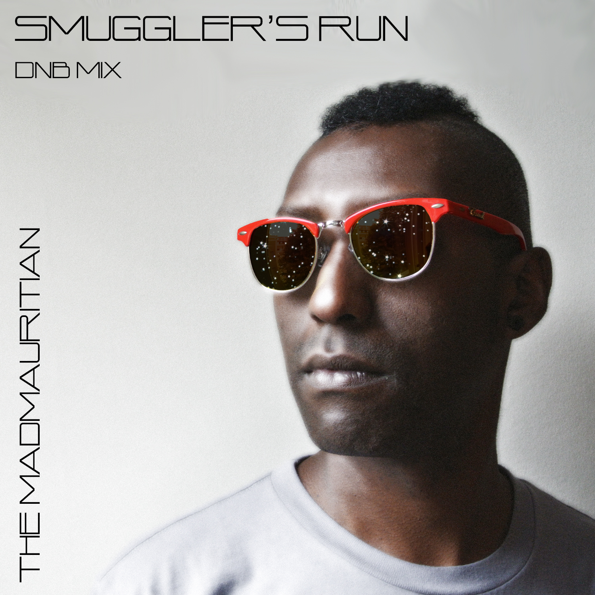

Posted by: Alex Russo 6 years, 2 months ago
(Comments)

(Cover art by Alyssa Nix)
Today Music Ecology resident and Blue Boy Productions drummer Chris Narainen aka The Mad Mauritian drops his latest mix - an hour of freshie drum and bass for your ear holes. As The Mad Mauritian Chris is quickly becoming known as one of the best DnB DJs in the region, an achievement that means a lot in Boston - home to the longest running DnB night in America: Elements at Phoenix Landing! In typical Mad Mauritian fashion this mix seamlessly combines drum and bass from all over the spectrum (with a touch of juke/footwork for good measure). Starting off melodic, dark, and deep, the mix quickly picks up and delivers moody, glitchy, neuro vibes with tasteful vocals interspersed throughout. No doubt the mad man successfully delivers a super heady stash from the farthest reaches of the universe in this one!
Catch Chris playing original music with me, as Blue Boy Productions, next Saturday night, September 6 on the main stage at Canna Carnival in Maine, and DJing on October 10 late night at RISE in Boston for an Orchard Lounge/Jimkata after party. Enjoy!
Smuggler's Run - Mixed by The Mad Mauritian
1. She Came With Tranquility- John Caza
2. Black Hole- Loxy & Resound
3. Yeah don't dance, just look at the mixer. safe- Dub Phizix
4. Far Out Funk- Soul Intent
5. Get Stupid (Tony The Tiger)- Dexta & Breden
6. VIP Zoom- Stray
7. Burn Dem- Hyroglifics
8. Survival- The_Jam (2014 VIP)
9. Primal Instinct (ft. Maksim)- Mefjus & Bowsar
10. Cobalt- Trilo
11. Giving Me-EBK
12. Sanford John- Dub Phizix
13. League of Shadows- Loxy & Resound
14. Bright Sky (Amen Mix)- Judda
15. Too Much to Lose (Maurs Remix)- Sun Glitters
16. All My Love- Fracture
17. All Over- Dub Phizix
18. Walk Away (RoyGreen & Protone Remix)- Zero T feat Steo
19. ESP
20. Ghost- M. Soul
21. Revenge (Nuera Remix)- Gridlock & Prolix
22. Corposant- The Upbeats
23. Dead on Arrival (TBT Remaster)- Evol Intent
24. Barnard's Loop (Master)- Fre4knc
25. Bad Kingdom (BTK D&B Bootleg)- Moderat
26. To The Moon
27. Stark- Marcus Intalex
28. Each & Every- Loxy & J. Robinson
Recent Posts
- Freddy Todd w/ WΦKE & Icculus Boston 9/21
- Together Boston Kicks Off This Sunday 9/23
- Project MUM Somerville Outdoor Party 9/22 FREE
- Learson Peak @ ANNA Wednesday 8/29 (Free Show)
- Space Jesus b2b EPROM this Friday in Brooklyn
Archive
2018
2015
2014
Categories
- Albums (2)
- Allston (1)
- BBP (2)
- Bands (1)
- Blue Boy Productions (4)
- Boston (1)
- Brooklyn (1)
- Cambridge (1)
- Chillout (1)
- DJ Anya (1)
- Drum and Bass (1)
- EPROM (1)
- EarthCry (1)
- Esseks (1)
- Events (6)
- Freddy Todd (1)
- Freddy Todd (1)
- Free Events (2)
- Free downloads (2)
- Glitch Hop (2)
- Glitch Hop (2)
- Grateful Dead (1)
- Huxley Anne (1)
- Icculus (1)
- Jaenga (1)
- Learson Peak (1)
- Live Music (2)
- Live Recording (1)
- Middle East (1)
- Mixes (3)
- New Music (2)
- New York (1)
- Original Tracks (5)
- Outdoors (1)
- Particle (1)
- Remixes (1)
- Schlang (1)
- Shows (7)
- Space Jesus (4)
- Supersillyus (1)
- The Mad Mauritian (2)
- Tiedye Ky (1)
- Trap (1)
- Unreleased Music (1)
- Video (1)
- WΦKE (1)
- desert dwellers (1)
- lespecial (2)
Authors
- Polar Vortex (12)
- Alex Russo (16)
- Alex Russo (6)
Feeds
RSS / AtomSubscribe to our Newsletter
Connect
Comments